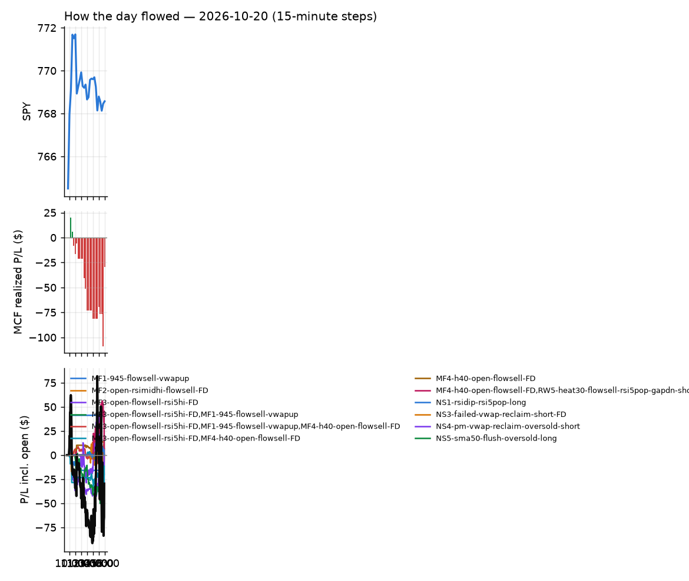
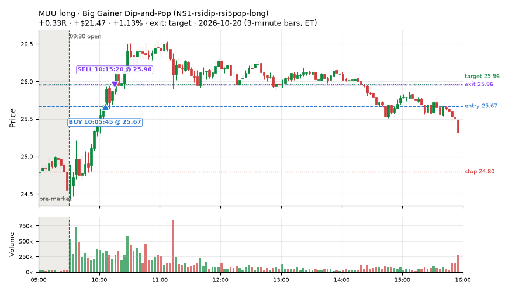
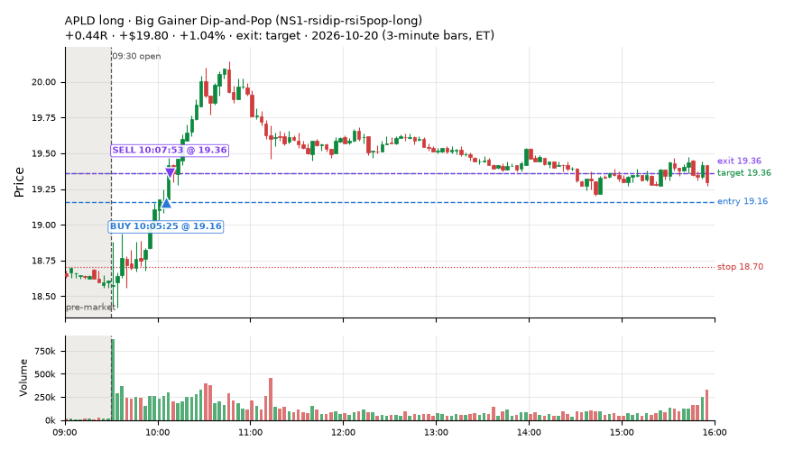
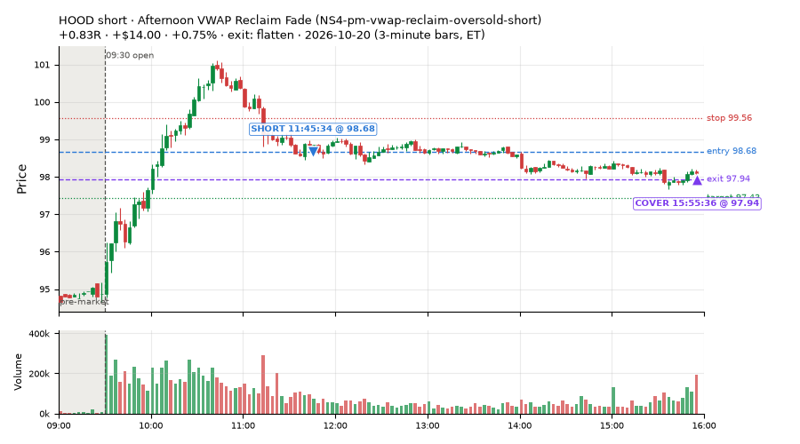
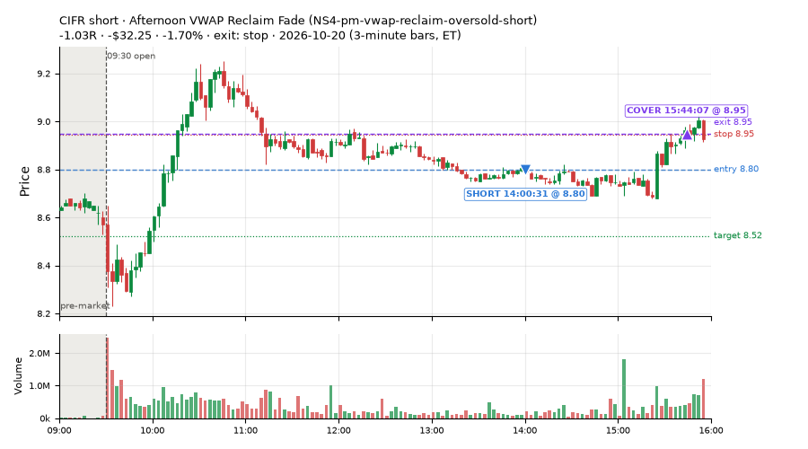
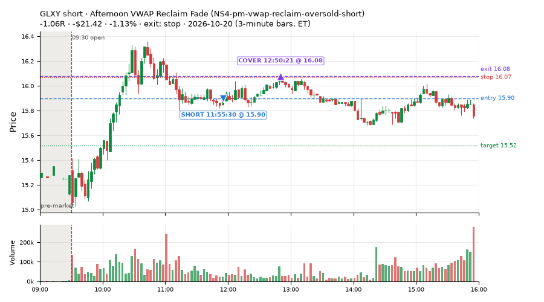
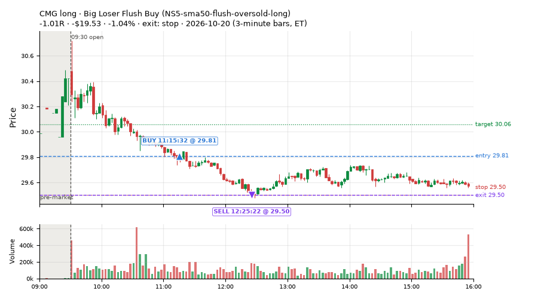
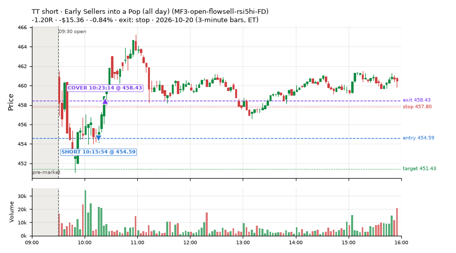
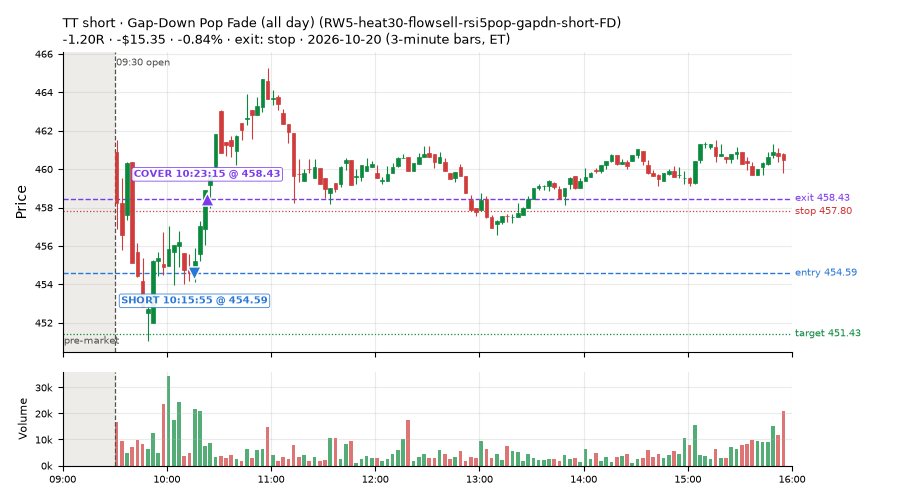

70 trades · win rate 54% · P/L $-29.61
PROBATION: no live setup has passed both locked test periods. 10 owner-directed setups added 2026-10-08 (MarcoFlow top 5 + 5 new), untested live. RW6G1 (RW6 + VWAP band guard) added 2026-10-09, probation.

| Symbol | Setup | Side | In | Out | Entry | Exit | Exit reason | % gained | P/L |
|---|---|---|---|---|---|---|---|---|---|
| MUU | Big Gainer Dip-and-Pop (NS1-rsidip-rsi5pop-long) | long | 10:05 | 10:15 | 25.67 | 25.96 | target | +1.13% | $21.47 |
| APLD | Big Gainer Dip-and-Pop (NS1-rsidip-rsi5pop-long) | long | 10:05 | 10:07 | 19.16 | 19.36 | target | +1.04% | $19.80 |
| HOOD | Afternoon VWAP Reclaim Fade (NS4-pm-vwap-reclaim-oversold-short) | short | 11:45 | 15:55 | 98.68 | 97.94 | flatten | +0.75% | $14.00 |
| Symbol | Setup | Side | In | Out | Entry | Exit | Exit reason | % lost | P/L |
|---|---|---|---|---|---|---|---|---|---|
| CIFR | NS4-pm-vwap-reclaim-oversold-short | short | 14:00 | 15:44 | 8.80 | 8.95 | stop | -1.70% | $-32.25 |
| GLXY | NS4-pm-vwap-reclaim-oversold-short | short | 11:55 | 12:50 | 15.90 | 16.08 | stop | -1.13% | $-21.42 |
| CMG | NS5-sma50-flush-oversold-long | long | 11:15 | 12:25 | 29.81 | 29.50 | stop | -1.04% | $-19.53 |
| TT | MF3-open-flowsell-rsi5hi-FD | short | 10:15 | 10:23 | 454.59 | 458.43 | stop | -0.84% | $-15.36 |
| TT | RW5-heat30-flowsell-rsi5pop-gapdn-short-FD | short | 10:15 | 10:23 | 454.59 | 458.43 | stop | -0.84% | $-15.35 |








Signal to fill: median 2s, 90th percentile 3s (70 trades). Bars close each minute; the order follows the bar close.
Best excursion (MFE): median 0.59R; worst (MAE) median 0.43R. 16% of trades never got +0.25R in our favour; 2 reached +1R and still closed at or below 0.
| Symbol | Setup | Best R | Worst R | Closed R |
|---|---|---|---|---|
| IYR | MF1-945-flowsell-vwapup | +1.17 | -1.41 | -1.01 |
| TD | MF1-945-flowsell-vwapup | +1.05 | -0.99 | -1.12 |
| CNC | NS4-pm-vwap-reclaim-oversold-short | +0.87 | -1.32 | -1.10 |
| CIFR | NS4-pm-vwap-reclaim-oversold-short | +0.82 | -1.23 | -1.03 |
| EWC | MF1-945-flowsell-vwapup | +0.81 | -1.07 | -0.99 |
| Entry time | Trades | Win | Avg R | P/L |
|---|---|---|---|---|
| 09:50-10:30 | 21 | 24% | -0.47 | $-59.92 |
| 10:30-11:30 | 9 | 56% | -0.01 | $-25.05 |
| 11:30-13:00 | 6 | 33% | -0.29 | $-16.89 |
| 13:00-14:00 | 11 | 64% | +0.24 | $20.36 |
| 14:00-16:00 | 23 | 83% | +0.30 | $51.89 |
| Setup | Trades | Win | Avg R | Adj R (net of SPY) | P/L |
|---|---|---|---|---|---|
| Early Sellers Above VWAP (MF1-945-flowsell-vwapup) owner-directed; holdouts once: Sep-Oct +0.169R n86, Apr-Jun -0.050R n429 | 7.0 | 14% | -0.49 | +0.54 | $-20.03 |
| Early Sellers, Mid-High RSI (all day) (MF2-open-rsimidhi-flowsell-FD) | 2.0 | 100% | +1.78 | +0.91 | $13.22 |
| Early Sellers into a Pop (all day) (MF3-open-flowsell-rsi5hi-FD) | 20.0 | 50% | -0.14 | -0.08 | $-27.80 |
| Early Sellers, Strong Heat (all day) (MF4-h40-open-flowsell-FD) | 8.0 | 62% | +0.10 | -0.24 | $5.43 |
| Big Gainer Dip-and-Pop (NS1-rsidip-rsi5pop-long) owner-directed; holdouts once: Sep-Oct +0.326R n10, Apr-Jun +0.056R n119 | 2.0 | 100% | +0.38 | +0.34 | $41.27 |
| Big Loser VWAP Reclaim Fade (all day) (NS3-failed-vwap-reclaim-short-FD) | 6.0 | 33% | -0.04 | -0.22 | $-2.93 |
| Afternoon VWAP Reclaim Fade (NS4-pm-vwap-reclaim-oversold-short) owner-directed; holdouts once: Sep-Oct -0.086R n49, Apr-Jun -0.080R n342 | 11.0 | 73% | +0.07 | -0.09 | $6.76 |
| Big Loser Flush Buy (NS5-sma50-flush-oversold-long) owner-directed; holdouts once: Sep-Oct -0.008R n73, Apr-Jun +0.002R n231 | 3.0 | 0% | -0.77 | -0.64 | $-40.46 |
| Gap-Down Pop Fade, Heavy Selling (all day) (RW3-gapdn-rsi5pop-flowsell-short-FD) | 3.0 | 100% | +0.28 | -0.19 | $6.44 |
| Gap-Down Pop Fade (all day) (RW5-heat30-flowsell-rsi5pop-gapdn-short-FD) | 8.0 | 62% | -0.00 | -0.26 | $-11.51 |
Market direction (SPY, beta 1) accounted for $32.39 of today's $-29.61; the rest ($-62.00) came from the setups themselves. Avg R net of SPY: -0.06 (incl. a hedge leg's cost; report only).
13 setups live today. Today: 88 signals, 70 taken, 5 lost because another setup held the symbol (6%). Since 2026-10-06 (11 sessions): 636 signals, 418 taken, 55 lost to other setups (9%). Peak open positions today 41 of 160 slots. Earnings blackout removed 412 symbols before scanning.
Simulated playing time (not live): 216 what-if trades of signals not taken, avg -0.04R, 52% winners; of them 55 lost to another setup (avg -0.05R).
Silent: intraday_momentum · Crowded out: MF3-open-flowsell-rsi5hi, MF5-flowsell-vwapup-rsi5hi
| Prio | Setup | Today sig / taken | Sessions | Signals / taken / trades | Taken/day | Expected/day | Lost to other setups | Lost to (setup n) | Top skip reasons | SIMULATED: not-taken n / avg R / win | Verdict |
|---|---|---|---|---|---|---|---|---|---|---|---|
| 1 | Gap-Down Pop Fade (all day) RW5-heat30-flowsell-rsi5pop-gapdn-short-FD | 8 / 8 | 3 | 14 / 12 / 12 | 4.00 | 12.79 | 0 | – | spread / quote / size 2 | 2 / +0.62R / 100% | ok 20.0 entries/week |
| 2 | Gap-Down Pop Fade, Heavy Selling (all day) RW3-gapdn-rsi5pop-flowsell-short-FD | 5 / 3 | 3 | 15 / 11 / 11 | 3.67 | 13.59 | 0 | – | not shortable / shorts off 2, spread / quote / size 2 | 4 / +0.13R / 50% | ok 18.3 entries/week |
| 3 | Early Sellers into a Pop (all day) MF3-open-flowsell-rsi5hi-FD | 23 / 20 | 3 | 50 / 45 / 45 | 15.00 | 24.16 | 0 | – | spread / quote / size 5 | 5 / +0.26R / 60% | ok 75.0 entries/week |
| 4 | Early Sellers, Mid-High RSI (all day) MF2-open-rsimidhi-flowsell-FD | 2 / 2 | 1 | 2 / 2 / 2 | 2.00 | 10.09 | 0 | – | – | 0 / – | watch 2.00 entries/day vs ~10.09 expected |
| 5 | Early Sellers, Strong Heat (all day) MF4-h40-open-flowsell-FD | 9 / 8 | 1 | 9 / 8 / 8 | 8.00 | 16.45 | 1 | RW5-heat30-flowsell-rsi5pop-gapdn-short-FD 1, RW3-gapdn-rsi5pop-flowsell-short-FD 1, MF3-open-flowsell-rsi5hi-FD 1 | symbol held by another setup 1 | 1 / +0.38R / 100% | ok 40.0 entries/week |
| 6 | Big Loser VWAP Reclaim Fade (all day) NS3-failed-vwap-reclaim-short-FD | 7 / 6 | 1 | 7 / 6 / 6 | 6.00 | 22.02 | 0 | – | not shortable / shorts off 1 | 1 / -0.34R / 0% | ok 30.0 entries/week |
| 7 | Big Gainer Fade with VWAP Band Guard RW6G1-ns2-up3-vwap2sd-short | 0 / 0 | 8 | 5 / 3 / 3 | 0.38 | 0.40 | 0 | – | not shortable / shorts off 1, spread / quote / size 1 | 2 / +0.22R / 50% | slow 1.9 entries/week; ~32 weeks to 60 trades |
| 8 | Big Gainer Dip-and-Pop NS1-rsidip-rsi5pop-long | 3 / 2 | 9 | 10 / 8 / 8 | 0.89 | 0.92 | 0 | – | spread / quote / size 2 | 2 / +0.39R / 100% | slow 4.4 entries/week; ~14 weeks to 60 trades |
| 9 | Early Sellers, Mid-High RSI MF2-open-rsimidhi-flowsell | 0 / 0 | 9 | 9 / 4 / 4 | 0.44 | 1.30 | 0 | – | spread / quote / size 3, not shortable / shorts off 2 | 5 / -0.48R / 20% | slow 2.2 entries/week; ~27 weeks to 60 trades |
| 10 | Big Loser Flush Buy NS5-sma50-flush-oversold-long | 3 / 3 | 9 | 15 / 13 / 13 | 1.44 | 2.41 | 0 | – | spread / quote / size 2 | 2 / +0.85R / 100% | slow 7.2 entries/week; ~8 weeks to 60 trades |
| 11 | Afternoon VWAP Reclaim Fade NS4-pm-vwap-reclaim-oversold-short | 11 / 11 | 9 | 19 / 16 / 16 | 1.78 | 3.05 | 0 | – | not shortable / shorts off 3 | 3 / -1.16R / 0% | slow 8.9 entries/week; ~7 weeks to 60 trades |
| 12 | Early Sellers Above VWAP MF1-945-flowsell-vwapup | 13 / 7 | 9 | 46 / 23 / 23 | 2.56 | 5.33 | 2 | MF4-h40-open-flowsell 1, RW5-heat30-flowsell-rsi5pop-gapdn-short-FD 1, RW3-gapdn-rsi5pop-flowsell-short-FD 1 | spread / quote / size 19, symbol held by another setup 2, not shortable / shorts off 2 | 23 / -0.26R / 35% | slow 12.8 entries/week; ~5 weeks to 60 trades |
| 13 | Early Sellers, Strong Heat MF4-h40-open-flowsell | 4 / 0 | 9 | 41 / 21 / 21 | 2.33 | 7.24 | 9 | MF3-open-flowsell-rsi5hi-FD 4, MF4-h40-open-flowsell-FD 4, MF3-open-flowsell-rsi5hi 3 | symbol held by another setup 9, not shortable / shorts off 6, spread / quote / size 5 | 20 / +0.02R / 65% | slow 11.7 entries/week; ~5 weeks to 60 trades |
Every trade is attached as a CSV you can open and edit in Excel or Google Sheets. Live page: https://misiti15.github.io/MCF/live/